Crêpes
Crêpes, oh, the beloved crêpe. So simple, yet so finicky to get _right_. It should be, in my mind: sweet, but not enough to make it overpower some good cheese and ham and savory, but not so much that it's like a saltine and easily pairs with some nutella, bananas and brown sugar or a basic marmalade. Texture is always as important as taste, crêpes should have a slight crisp to them, but not crunchy enough to be more akin to an ice cream cone, nor should it have absolutely no crisp that it might as well be a very thin, floppy pancake.
Now, here's Julia Child's recipe (I'll write it down at the bottom, no need to take notes here):
Start by pouring 2/3 cups of milk into a bowl

Add 2/3 cups of water

Add 1/4 tea spoon of salt
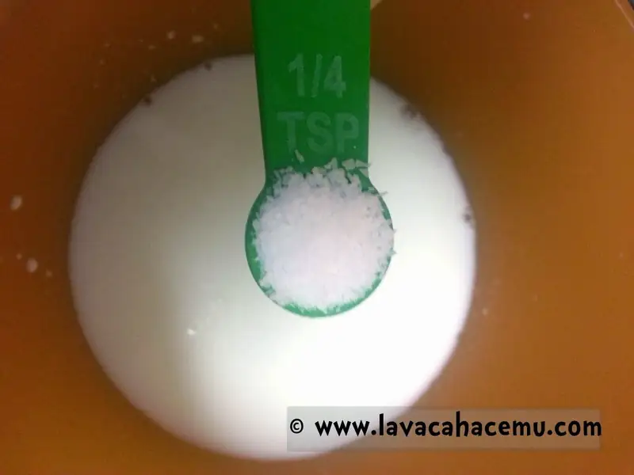
{kind=link}
3 whole eggs (yeah, they're in there)

Beat until smooth

Add 1 cup of flour and mix
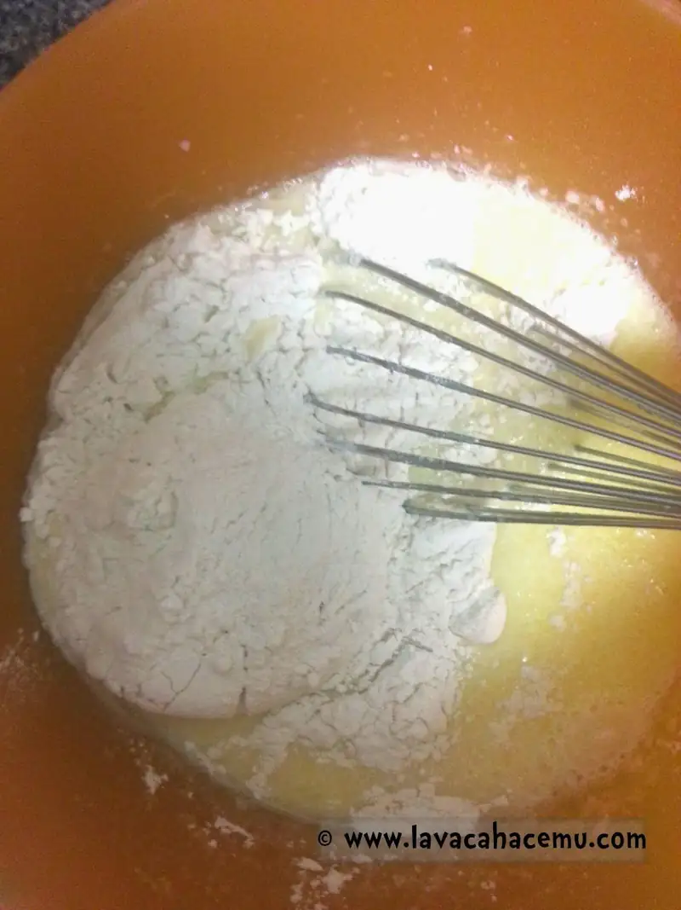
{kind=link}
Next, you're going to melt 3 table spoons of butter (use the markings on the package to measure)
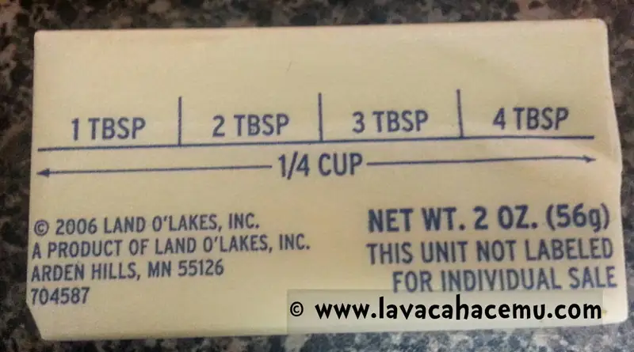
{kind=link}
Melt, preferably in the skillet or griddle where you plan on cooking your crêpes, I used the o'le cast iron skillet for it's sweet, sweet heat retention
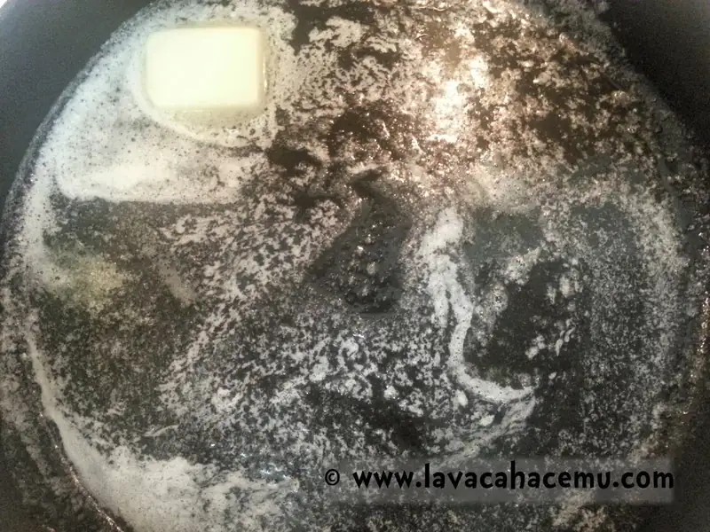
{kind=link}
I like to fold a half kitchen napkin in ~8ths like so
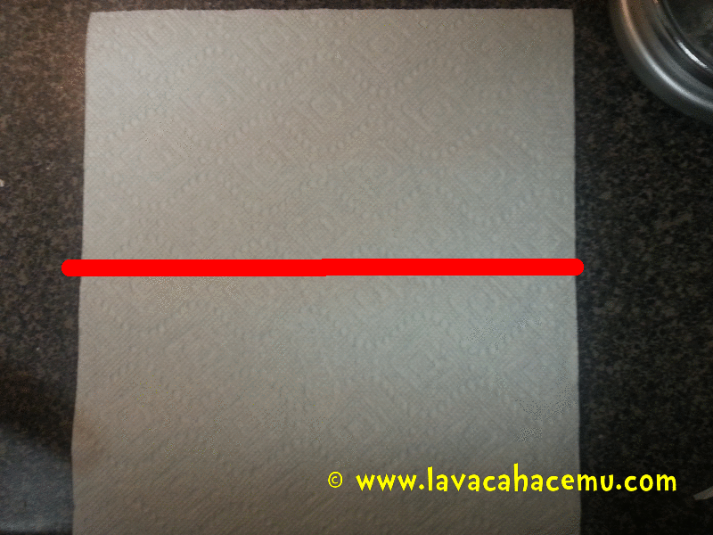
{kind=link}
And use this to soak up the excess butter, you'll use this napkin between crêpes to keep the skillet nicely greased
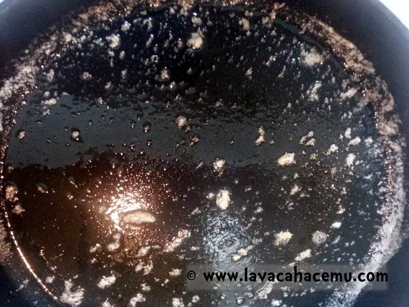
{kind=link}
And shiny!
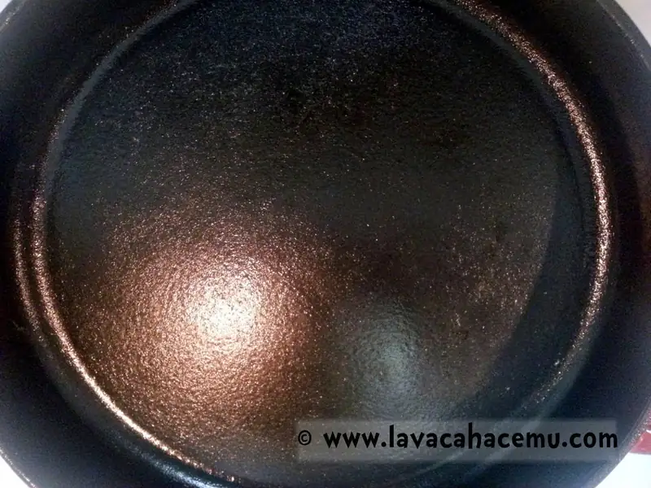
{kind=link}
Back to the batter, add the melted butter and beat until smooth. At this point you can let the batter rest in the fridge over night or go straight into crêpe-making madness, yes, you could make crêpes at the time of service, but c'mon, it's easier to make them ahead and reheat as needed.
[
](20150429_205923.gif)
Let's talk fillings, shall we?
Strawberries are a popular in this household

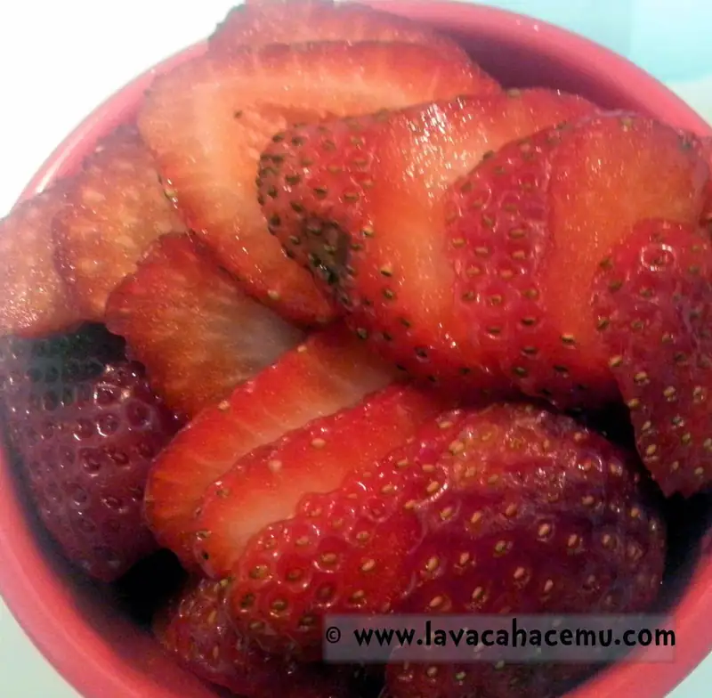
{kind=link}
As is cajeta (caramelized goat's milk "dulce de leche")

Now, when you make the crêpe, move the pan around to get the batter evenly distributed.

There should be enough to get to the edges of your pan
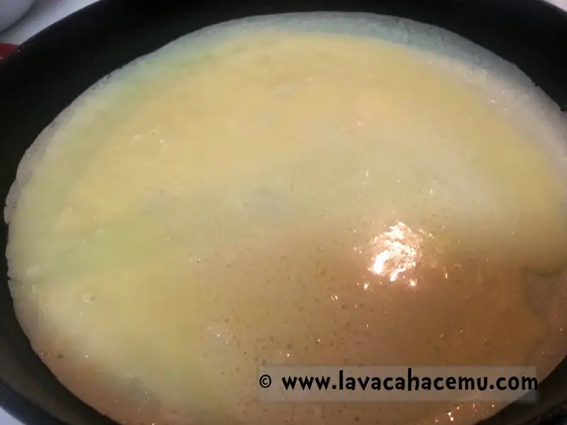
{kind=link}
You can swirl around your ladle to get the batter to move
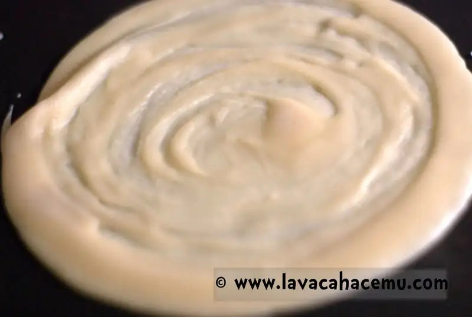
{kind=link}
Flip when the bottom browns a bit.
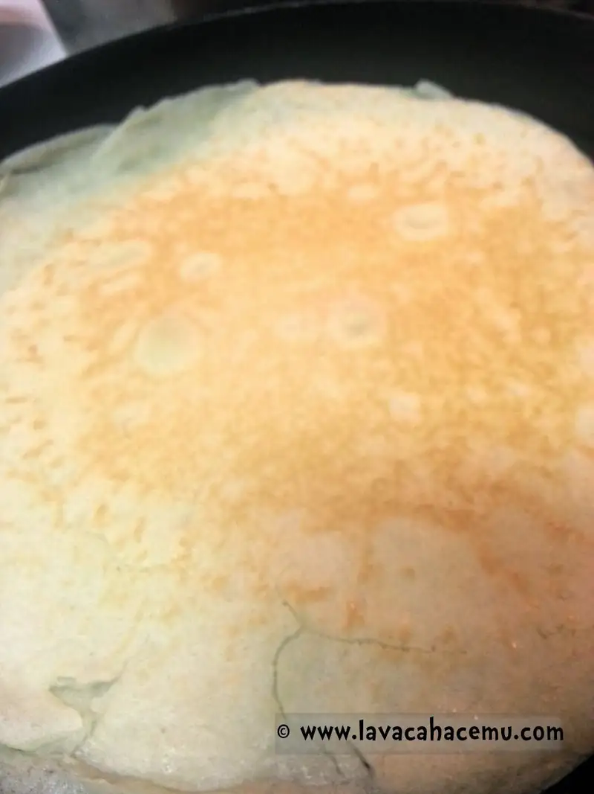
{kind=link}
If you find that the crêpe doesn't want to let go of the pan, sneak your spatula under the edges to make it start to let go

And start filling, I like "fold in quarters" method, so fill one quadrant.

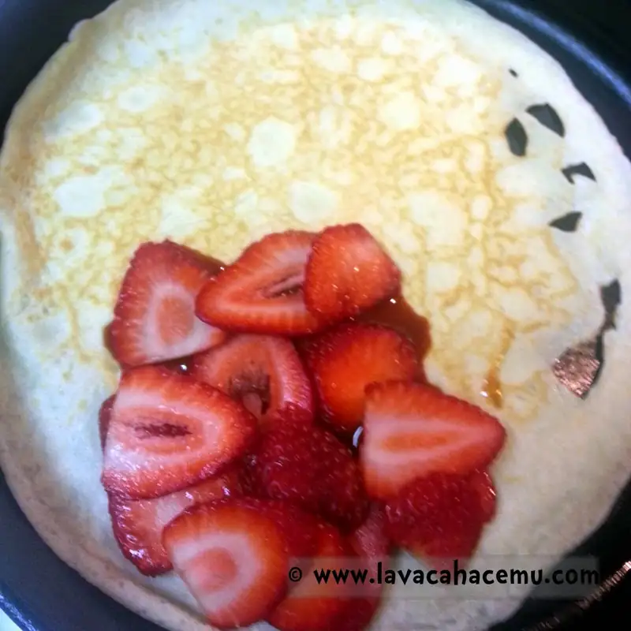
{kind=link}
And fold over the crêpe twice, so that it's 1/4 of the circumference
{kind=link}
Plate and make pretty :D
{kind=link}
Of course, you're not limited to sweet crêpes, this is one of the reasons that they're so versatile, you can stuff in some cheese and squash flowers

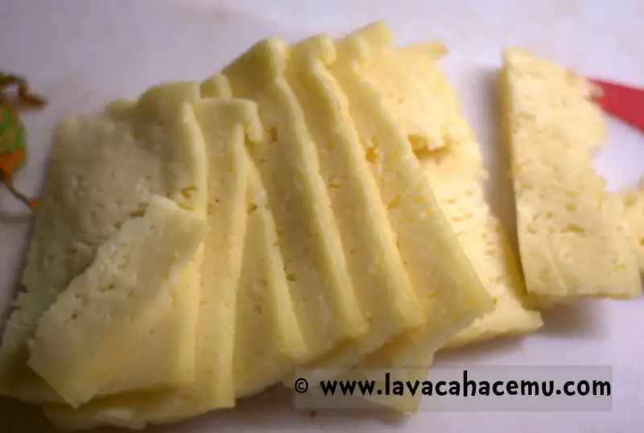
{kind=link}
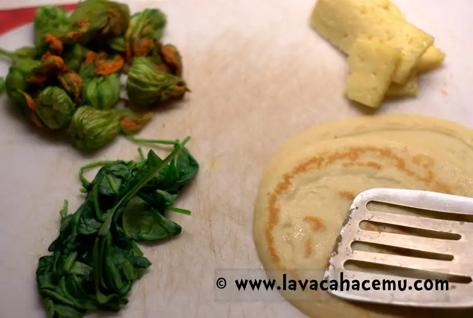
{kind=link}
Or spinach
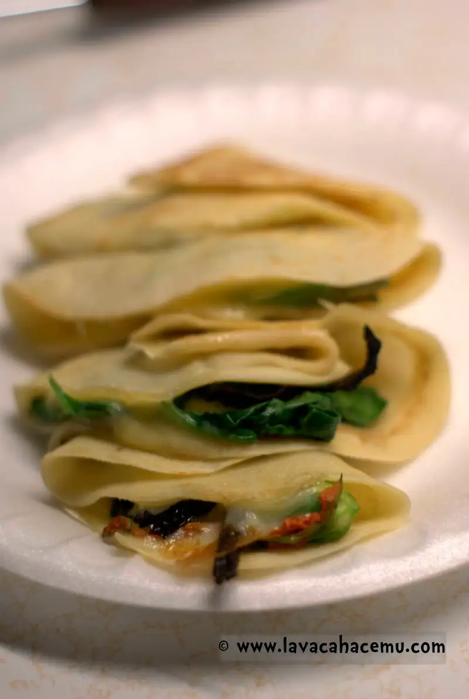
{kind=link}
Or, why not? pepperoni and mozzarella to make a sort of pizza/hotpocket crêpe!
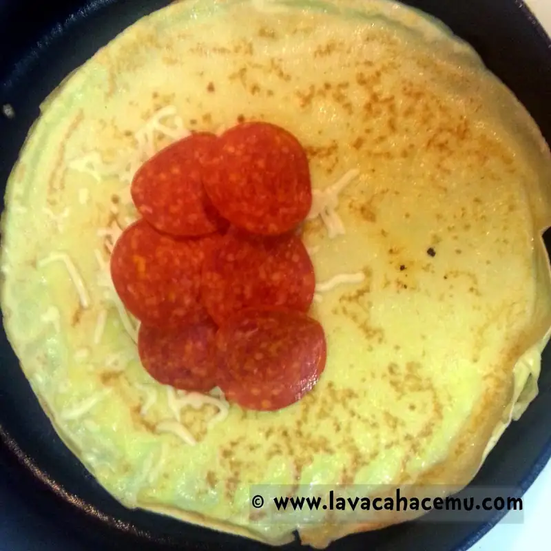
{kind=link}
Yes, this was actually pretty darn good.
{kind=link}